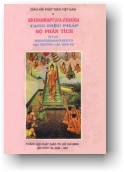

|
BuddhaSasana Home Page |
Vietnamese, with Unicode VU Times font |
|  |
THERAVĀDA VIBHAṄGA TẬP MỘT Dịch giả: |
|
Xin lưu ý: Cần có phông UnicodeViệt-Phạn VU Times cài vào máy để đọc các chữ Pàli. |
|
ÐẾ PHÂN TÍCH (SACCAVIBHAṄGO) PHÂN THEO KINH (Suttantabhājanīyaṃ) [144] BỐN THÁNH ÐẾ là khổ Thánh đế, khổ tập Thánh đế, khổ diệt Thánh đế, khổ diệt hành lộ Thánh đế. KHỔ THÁNH ÐẾ (Dukkhaṃ ariyasaccaṃ) [145] Ở ÐÂY, KHỔ THÁNH ÐẾ LÀ THẾ NÀO? Khổ sanh, khổ già, khổ chết [1], khổ sầu, bi, ưu, ai, khổ hội hợp với vật không yêu thích, khổ xa lìa vật yêu thích, khổ không được điều mong muốn, tóm lại là khổ năm thủ uẩn. [146] Ở ÐÂY, THẾ NÀO LÀ SANH[2]? Ðối với mỗi mỗi chúng sanh, có sự kiện sanh ra, sanh khởi, hiện ra, phát sanh ra thân hữu tình ấy, hiện khởi các uẩn, thành tựu các xứ. Ðây gọi là sanh. [147] Ở ÐÂY, THẾ NÀO LÀ GIÀ[3]? Ðối với mỗi mỗi chúng sanh, có sự kiện cũ kỹ, già nua, răng long, tóc bạc, da nhăn, giảm thọ, chín mùi các căn trong thân hữu tình ấy. Ðây gọi là già. [148] Ở ÐÂY, THẾ NÀO LÀ CHẾT[4]? Ðối với mỗi mỗi chúng sanh, từ thân hữu tình ấy có sự chuyển biến, đổi đời, hư hoại, tiêu mất, chết, tán vong, quá vãng, tan rã uẩn, bỏ xác, dứt mạng quyền. Ðây gọi là chết. [149] Ở ÐÂY, THẾ NÀO LÀ SẦU[5]? Tức là sự sầu muộn, sự buồn rầu, thái độ buồn rầu, buồn bực bên trong, não nề trong lòng, đốt lòng, ưu bi, bị tên sầu khi gặp nỗi khổ nào đó, khi xẩy đến điều suy vong nào đó như gặp suy vong thân quyến hoặc gặp sự suy vong tài sản, hoặc gặp sự suy vong bệnh tật, hoặc gặp sự suy vong giới hạnh, hay gặp sự suy vong tri kiến. Ðây gọi là sầu. [150] Ở ÐÂY, THẾ NÀO LÀ BI[6]? Tức là sự khóc lóc, khóc kể, khóc than, la khóc, thái độ khóc than, thái độ la khóc, sự phát ngôn, kể lễ, kêu gào, thút thít, than van, thái độ than van khi gặp nỗi khổ nào đó, khi xẩy đến điều suy vong tài sản, hoặc gặp suy vong tật bịnh, hoặc gặp suy vong giới hạnh, hay gặp suy vong tri kiến. Ðây gọi là bi. [151] Ở ÐÂY, THẾ NÀO LÀ KHỔ[7]? Tức là sự bất an thuộc về thân, sự đau đớn thuộc về thân, tình trạng cảm thọ bất an đau đớn sanh từ thân xúc, sự cảm giác bất an đau đớn sanh từ thân xúc. Ðây gọi là khổ. [152] Ở ÐÂY, THẾ NÀO LÀ ƯU[8]? Tức là sự bất an thuộc về tâm, sự đau đớn thuộc về tâm, tình trạng cảm thọ bất an đau đớn sanh từ tâm xúc, sự cảm giác bất an đau đớn sanh từ tâm xúc. Ðây gọi là ưu. [153] Ở ÐÂY, THẾ NÀO LÀ AI[9]? Tức là sự bi ai, sự ai oán, thái độ bi ai, thái độ ai oán khi gặp nỗi khổ nào đó, khi xẩy đến điều suy vong nào đó, như gặp suy vong thân quyến, hoặc gặp suy vong tài sản hoặc gặp suy vong bệnh tật, hoặc gặp suy vong giới hạnh hay gặp sự suy vong tri kiến. Ðây gọi là ai. [154] Ở ÐÂY, THẾ NÀO LÀ KHỔ KẾT HỢP VẬT KHÔNG YÊU THÍCH[10]? Ở đời này có nhân vật như sắc, thinh, khí, vị xúc mà không thích, không ưa, không vừa lòng; hay người mà muốn gây bất lợi, muốn gây vô ích, muốn gây bất lạc, muốn gây bất ổn, sự đi chung, gặp gỡ, hiệp cùng, hòa lẫn với những nhân vật ấy. Ðây gọi là khổ hội hiệp vật không yêu thích. [155] Ở ÐÂY, THẾ NÀO LÀ KHỔ XA LÌA VẬT YÊU THÍCH[11]? Ở đời nầy, có nhân vật như sắc, thinh, khí, vị, xúc mà ưa thích, ham muốn vừa lòng, hay người như mong đem lợi ích, mong đem may mắn, mong đem an lạc, mong đem an ổn, tức là mẹ hay cha, hoặc anh em, chị em, bạn bè, thân hữu, bà con huyết thống, sự không được hội ngộ, không được trùng phùng, không được chung sống, không được hòa mình với các nhân vật ấy. Ðây gọi là khổ xa lìa vật yêu thích. [156] Ở ÐÂY, THẾ NÀO LÀ KHỔ KHÔNG ÐƯỢC ÐIỀU MONG MUỐN[12]? Khi loài hữu tình có sự sanh khởi lên ước muốn như sau: “Ôi mong rằng chúng ta không có sự sanh và sự sanh đừng xẩy đến với chúng ta”, nhưng điều đó không thể toại nguyện. Ðây là khổ không được điều mong muốn. Khi loài hữu tình có sự già... (trùng)... Khi loài hữu tình có sự bịnh... (trùng)... Khi loài hữu tình có sự chết... (trùng)... Khi loài hữu tình có sầu bi khổ ưu ai, khởi lên ước muốn như sau: “Ôi mong rằng chúng ta không có sầu bi khổ ưu ai và sầu bi khổ ưu ai đừng xẩy đến với chúng ta”, nhưng điều đó không thể toại nguyện. Ðây là khổ không được điều mong muốn. [157] Ở ÐÂY, THẾ NÀO LÀ TÓM LƯỢC KHỔ NĂM THỦ UẨN[13]? Như là sắc thủ uẩn, thọ thủ uẩn, tưởng thủ uẩn, hành thủ uẩn, thức thủ uẩn. Ðây gọi là tóm lược khổ năm thủ uẩn. ÐÂY GỌI LÀ KHỔ THÁNH ÐẾ KHỔ TẬP THÁNH ÐẾ (Dukkhasamudayo ariyasaccaṃ) [158] Ở ÐÂY, THẾ NÀO LÀ KHỔ TẬP THÁNH ÐẾ? Tức là ái nầy thành điều kiện tái sanh, câu hành hỷ tham, quyến luyến cảnh nầy cảnh kia, tức là dục ái, hữu ái, phi hữu ái. [159] LẠI NỮA, ÁI ÐÓ KHI SANH, SANH CHỖ NÀO? KHI TRỤ, TRỤ CHỖ NÀO? Tức là trong thế gian có sắc khả ái, sắc mãn ý[14]; ái đó khi sanh, sanh ở đây, khi trụ, trụ ở đấy. SẮC KHẢ ÁI, SẮC MÃN Ý TRONG THẾ GIAN LÀ GÌ? Mắt là sắc khả ái, sắc mãn ý trong thế gian; ái đó khi sanh, sanh ở đấy, khi trụ, trụ ở đây. Tai... (trùng)... mũi... (trùng)... lưỡi... (trùng)... thân... (trùng)... ý là sắc khả ái, sắc mãn ý trong thế gian; ái đó khi sanh, sanh ở đấy, khi trụ, trụ ở đấy. Sắc là sắc khả ái, sắc mãn ý trong thế gian; ái đó khi sanh, sanh ở đấy, khi trụ, trụ ở đấy. Thinh... (trùng)... hương... (trùng)... vị... (trùng)... xúc... (trùng)... pháp là sắc khả ái, sắc mãn ý trong thế gian; ái đó khi sanh, sanh ở đấy, khi trụ, trụ ở đấy. Nhãn thức là sắc khả ái, sắc mãn ý trong thế gian; ái đó khi sanh, sanh ở đấy, khi trụ, trụ ở đấy. Nhĩ thức... (trùng)... tỷ thức... (trùng)... thiệt thức... (trùng)... thân thức... (trùng)... ý thức là sắc khả ái, sắc mãn ý trong thế gian; ái đó khi sanh, sanh ở đấy, khi trụ, trụ ở đấy. Nhãn xúc là sắc khả ái, sắc mãn ý trong thế gian; ái đó khi sanh, sanh ở đấy, khi trụ, trụ ở đấy. Nhĩ xúc... (trùng)... tỷ xúc... (trùng)... thiệt xúc... (trùng)... thân xúc... (trùng)... ý xúc là sắc khả ái, sắc mãn ý trong thế gian; ái đó khi sanh, sanh ở đấy, khi trụ, trụ ở đấy. Thọ sanh từ nhãn xúc là sắc khả ái, sắc mãn ý trong thế gian; ái đó khi sanh, sanh ở đấy, khi trụ, trụ ở đấy. thọ sanh từ nhĩ xúc... (trùng)... thọ sanh từ tỷ xúc... (trùng)... thọ sanh từ thiệt xúc... (trùng)... thọ sanh từ thân xúc... (trùng)... thọ sanh từ ý xúc là sắc khả ái, sắc mãn ý trong thế gian; ái đó khi sanh, sanh ở đấy, khi trụ, trụ ở đấy. Sắc tưởng[15] là sắc khả ái, sắc mãn ý trong thế gian; ái đó khi sanh, sanh ở đấy, khi trụ, trụ ở đấy. Thinh tưởng... (trùng)... hương tưởng... (trùng)... vị tưởng... (trùng)... xúc tưởng... (trùng)... pháp tưởng là sắc khả ái, sắc mãn ý trong thế gian; ái đó khi sanh, sanh ở đấy, khi trụ, trụ ở đấy. Sắc tư[16] là sắc khả ái, sắc mãn ý trong thế gian; ái đó khi sanh, sanh ở đấy, khi trụ, trụ ở đấy. Thinh tư... (trùng)... hương tư... (trùng)... vị tư... (trùng)... xúc tư... (trùng)... pháp tư là sắc khả ái, sắc mãn ý trong thế gian; ái đó khi sanh, sanh ở đấy, khi trụ, trụ ở đấy. Sắc ái[17] là sắc khả ái, sắc mãn ý trong thế gian; ái đó khi sanh, sanh ở đấy, khi trụ, trụ ở đấy. Thinh ái (trùng)... hương ái... (trùng)... vị ái... (trùng)... xúc ái... (trùng)... pháp ái là sắc khả ái, sắc mãn ý trong thế gian; ái đó khi sanh, sanh ở đấy, khi trụ, trụ ở đấy. Sắc tầm[18] là sắc khả ái, sắc mãn ý trong thế gian; ái đó khi sanh, sanh ở đấy, khi trụ, trụ ở đấy. Thinh tầm (trùng)... hương tầm... (trùng)... vị tầm... (trùng)... xúc tầm... (trùng)... pháp tầm là sắc khả ái, sắc mãn ý trong thế gian; ái đó khi sanh, sanh ở đấy, khi trụ, trụ ở đấy. Sắc tứ[19] là sắc khả ái, sắc mãn ý trong thế gian; ái đó khi sanh, sanh ở đấy, khi trụ, trụ ở đấy. Thinh tứ (trùng)... hương tứ... (trùng)... vị tứ... (trùng)... xúc tứ... (trùng)... pháp tứ là sắc khả ái, sắc mãn ý trong thế gian; ái đó khi sanh, sanh ở đấy, khi trụ, trụ ở đấy. ÐÂY GỌI LÀ KHỔ TẬP THÁNH ÐẾ KHỔ DIỆT THÁNH ÐẾ (Dukkhanirodhaṃ ariyasaccaṃ) [160] Ở ÐÂY, THẾ NÀO LÀ KHỔ DIỆT THÁNH ÐẾ? Tức là sự hoàn toàn đoạn ly, xả bỏ, dứt bỏ, giải thoát, bất luyến đối với ái kia. [161] LẠI NỮA, ÁI ÐÓ KHI BỊ TRỪ, TRỪ CHỖ NÀO? KHI BỊ DIỆT, DIỆT CHỖ NÀO? Tức là trong thế gian có sắc khả ái, sắc mãn ý, khi bị trừ, trừ ở đấy, khi bị diệt, diệt ở đấy. SẮC KHẢ ÁI, SẮC MÃN Ý TRONG THẾ GIAN LÀ GÌ? Mắt là sắc khả ái, sắc mãn ý trong thế gian; ái đó khi bị trừ, trừ ở đấy, khi bị diệt, diệt ở đấy. Tai... (trùng)... mũi... (trùng)... lưỡi... (trùng)... thân... (trùng)... ý là sắc khả ái, sắc mãn ý trong thế gian; ái đó khi bị trừ, trừ ở đấy, khi bị diệt, diệt ở đấy. Sắc là sắc khả ái, sắc mãn ý trong thế gian; ái đó khi bị trừ, trừ ở đấy, khi bị diệt, diệt ở đấy. Thinh... (trùng)... hương... (trùng)... vị... (trùng)... xúc... (trùng)... pháp là sắc khả ái, sắc mãn ý trong thế gian; ái đó khi bị trừ, trừ ở đấy, khi bị diệt, diệt ở đấy. Nhãn thức là sắc khả ái, sắc mãn ý trong thế gian; ái đó khi bị trừ, trừ ở đấy, khi bị diệt, diệt ở đấy. Nhĩ thức... (trùng)... tỷ thức... (trùng)... thiệt thức... (trùng)... thân thức... (trùng)... ý thức là sắc khả ái, sắc mãn ý trong thế gian; ái đó khi bị trừ, trừ ở đấy, khi bị diệt, diệt ở đấy. Nhãn xúc là sắc khả ái, sắc mãn ý trong thế gian; ái đó khi bị trừ, trừ ở đấy, khi bị diệt, diệt ở đấy. Nhĩ xúc... (trùng)... tỷ xúc... (trùng)... thiệt xúc... (trùng)... thân xúc... (trùng)... ý xúc là sắc khả ái, sắc mãn ý trong thế gian; ái đó khi bị trừ, trừ ở đấy, khi bị diệt, diệt ở đấy. Thọ sanh từ nhãn xúc là sắc khả ái, sắc mãn ý trong thế gian; ái đó khi bị trừ, trừ ở đấy, khi bị diệt, diệt ở đấy. Thọ sanh từ nhĩ xúc... (trùng)... thọ sanh từ tỷ xúc... (trùng)... thọ sanh từ thiệt xúc... (trùng)... thọ sanh từ thân xúc... (trùng)... thọ sanh từ ý xúc là sắc khả ái, sắc mãn ý trong thế gian; ái đó khi bị trừ, trừ ở đấy, khi bị diệt, diệt ở đấy. Sắc tưởng là sắc khả ái, sắc mãn ý trong thế gian; ái đó khi bị trừ, trừ ở đấy, khi bị diệt, diệt ở đấy. Thinh tưởng... (trùng)... hương tưởng... (trùng)... vị tưởng... (trùng)... xúc tưởng... (trùng)... pháp tưởng là sắc khả ái, sắc mãn ý trong thế gian; ái đó khi bị trừ, trừ ở đấy, khi bị diệt, diệt ở đấy. Sắc tư là sắc khả ái, sắc mãn ý trong thế gian; ái đó khi bị trừ, trừ ở đấy, khi bị diệt, diệt ở đấy. Thinh tư... (trùng)... hương tư... (trùng)... vị tư... (trùng)... xúc tư... (trùng)... pháp tư là sắc khả ái, sắc mãn ý trong thế gian; ái đó khi bị trừ, trừ ở đấy, khi bị diệt, diệt ở đấy. Sắc ái là sắc khả ái, sắc mãn ý trong thế gian; ái đó khi bị trừ, trừ ở đấy, khi bị diệt, diệt ở đấy. Thinh ái... (trùng)... hương ái... (trùng)... vị ái... (trùng)... xúc ái... (trùng)... pháp ái là sắc khả ái, sắc mãn ý trong thế gian; ái đó khi bị trừ, trừ ở đấy, khi bị diệt, diệt ở đấy. Sắc tầm là sắc khả ái, sắc mãn ý trong thế gian; ái đó khi bị trừ, trừ ở đấy, khi bị diệt, diệt ở đấy. Thinh tầm... (trùng)... hương tầm... (trùng)... vị tầm... (trùng)... xúc tầm... (trùng)... pháp tầm là sắc khả ái, sắc mãn ý trong thế gian; ái đó khi bị trừ, trừ ở đấy, khi bị diệt, diệt ở đấy. Sắc tứ là sắc khả ái, sắc mãn ý trong thế gian; ái đó khi bị trừ, trừ ở đấy, khi bị diệt, diệt ở đấy. Thinh tứ... (trùng)... hương tứ... (trùng)... vị tứ... (trùng)... xúc tứ... (trùng)... pháp tứ là sắc khả ái, sắc mãn ý trong thế gian; ái đó khi bị trừ, trừ ở đấy, khi bị diệt, diệt ở đấy. ÐÂY GỌI LÀ KHỔ DIỆT THÁNH ÐẾ KHỔ DIỆT HÀNH LỘ THÁNH ÐẾ (Dukkhanirodhagāmīnipatipadā ariyasaccaṃ) [162] Ở ÐÂY, THẾ NÀO LÀ KHỔ DIỆT HÀNH LỘ THÁNH ÐẾ? Chính là Thánh Ðạo tám chi nầy, như là chánh kiến, chánh tư duy, chánh ngữ, chánh nghiệp, chánh mạng, chánh tinh tấn, chánh niệm, chánh định. [163] Ở ÐÂY, CHÁNH KIẾN[20] LÀ THẾ NÀO? Tức là trí hiểu về khổ, trí hiểu về khổ tập, trí hiểu về khổ diệt, trí hiểu về khổ diệt hành lộ. Ðây gọi là chánh kiến. [164] Ở ÐÂY, CHÁNH TƯ DUY[21] LÀ THẾ NÀO? Tức là sự suy nghĩ xuất ly, sự suy nghĩ vô sân độc, suy nghĩ bất hại nhiểu. Ðây gọi là chánh tư duy. [165] Ở ÐÂY, CHÁNH NGỮ[22] LÀ THẾ NÀO? Tức là sự ngăn trừ lời nói dối, ngăn trừ lời nói đâm thọc, ngăn trừ lời nói ác độc, ngăn trừ chuyện nhãm nhí. Ðây gọi là chánh ngữ. [166] Ở ÐÂY, CHÁNH NGHIỆP[23] LÀ THẾ NÀO? Tức là sự ngăn trừ sát sanh, ngăn trừ trộm cắp, ngăn trừ tà hạnh dục lạc. Ðây gọi là chánh nghiệp. [167] Ở ÐÂY, CHÁNH MẠNG[24] LÀ THẾ NÀO? Tức là, vị Thánh Thinh Văn từ bỏ tà mạng, nuôi sống bằng chánh mạng. Ðây gọi là chánh mạng. [168] Ở ÐÂY, CHÁNH TINH TẤN[25] LÀ THẾ NÀO? Tức là ở đây, vị tỳ khưu đối với các ác bất thiện pháp chưa sanh bèn khởi lên ước muốn tinh tấn, chuyên cần, quyết tâm, kiên trì làm cho không sanh đối với các ác bất thiện pháp đã sanh... (trùng)... đoạn trừ. Ðối với các thiện pháp chưa sanh, bèn khởi ước muốn tinh tấn, chuyên cần, quyết tâm, kiên trì làm cho sanh. Ðối với các thiện pháp đã sanh, bèn khởi ước muốn tinh tấn, chuyên cần, quyết tâm, kiên trì làm cho tăng thịnh, nới rộng, phát triển, hoàn bị. Ðây gọi là chánh tinh tấn. [169] Ở ÐÂY, CHÁNH NIỆM[26] LÀ THẾ NÀO? Tức là ở đây, vị tỳ khưu trú tùy quán thân trong thân, nhiệt tâm, tỉnh giác, ức niệm, đào thải tham ưu ở đời. Tùy quán thọ trong các thọ... (trùng)... Tùy quán tâm trong tâm... (trùng)... Tùy quán pháp trong các pháp, nhiệt tâm, tỉnh giác, ức niệm, đào thải tham ưu ở đời. Ðây gọi là chánh niệm. [170] Ở ÐÂY, CHÁNH ÐỊNH[27] LÀ THẾ NÀO? Tức là ở đây, vị tỳ khưu ly dục, ly bất thiện pháp, chứng và trú Sơ thiền một pháp hỷ lạc sanh do ly dục, có tầm có tứ; tịnh chỉ tầm tứ chứng và trứ Nhị thiền một pháp hỷ lạc sanh từ định, nội tỉnh nhất tâm, không tầm không tứ; ly hỷ trú xả, chánh niệm tỉnh giác, với thân hưởng lạc, chứng và trú Tam thiền, một pháp mà chư Thánh gọi là xả niệm lạc trú; bỏ lạc, bỏ khổ, dập tắt hỷ ưu trước kia, chứng và trú tứ thiền, một pháp xả niệm thanh tịnh phi khổ phi lạc. Ðây là chánh định. ÐÂY GỌI LÀ KHỔ DIỆT HÀNH LỘ THÁNH ÐẾ DỨT PHẦN PHÂN THEO KINH PHÂN THEO VI DIỆU PHÁP (Abhidhammabhājanīyaṃ) [171] BỐN THÁNH ÐẾ là khổ, khổ tập, khổ diệt và khổ diệt hành lộ. [172] Ở ÐÂY, THẾ NÀO LÀ KHỔ TẬP[28]? Ái. Ðây là khổ tập. [173] Ở ÐÂY, THẾ NÀO LÀ KHỔ[29]? Các phiền não còn lại, các pháp bất thiện còn lại, ba căn thiện cảnh lậu, các pháp thiện cảnh lậu còn lại, các dị thục cảnh lậu[30] của pháp thiện, bất thiện, các pháp thành tố[31] phi thiện phi bất thiện phi quả nghiệp, tất cả sắc. Ðây gọi là khổ. [174] Ở ÐÂY, THẾ NÀO LÀ KHỔ DIỆT[32]? Sự đoạn trừ ái. Ðây là khổ diệt. [175] Ở ÐÂY, THẾ NÀO LÀ KHỔ DIỆT HÀNH LỘ[33]? Ở đây, khi nào vị tỳ khưu tu tập thiền siêu thế, pháp dẫn xuất, nhân tịch diệt, để đoạn trừ thiên kiến, đạt đến đệ nhất địa vức, ly các dục... (trùng)... chứng và trú Sơ thiền, hành nan đắc trì; trong khi ấy có đạo tám chi là chánh kiến... (trùng)... chánh định. [176] Ở ÐÂY, CHÁNH KIẾN LÀ THẾ NÀO? Tức là sự thông hiểu, hiểu rõ... (trùng)... vô si, trạch pháp chánh kiến, trạch pháp giác chi, đạo chi, liên quan đạo[34]. Ðây gọi là chánh kiến. [177] Ở ÐÂY, CHÁNH TƯ DUY LÀ THẾ NÀO? Tức là sự tìm cảnh, sự nghĩ ngợi... (trùng)... chánh tư duy chi đạo, liên quan đạo. Ðây gọi là chánh tư duy. [178] Ở ÐÂY, CHÁNH NGỮ LÀ THẾ NÀO? Tức là sự chừa bỏ bốn ngữ ác hạnh, ngăn trừ, kiêng tránh, lánh xa, không tạo tác, không hành vi, không vi phạm, không vượt mức, đã dẹp bỏ, thành chánh ngữ đạo chi, liên quan đạo. Ðây gọi là chánh ngữ. [179] Ở ÐÂY, CHÁNH NGHIỆP LÀ THẾ NÀO? Tức là sự chừa bỏ ba thân ác hạnh, ngăn trừ, kiêng tránh, lánh xa, không tạo tác, không hành vi, không vi phạm, không vượt mức, đã dẹp bỏ, thành chánh nghiệp đạo chi, liên quan đạo. Ðây gọi là chánh nghiệp. [180] Ở ÐÂY, CHÁNH MẠNG LÀ THẾ NÀO? Tức là sự chừa bỏ tà mạng, ngăn trừ, kiêng tránh, lánh xa, không tạo tác, không hành vi, không vi phạm, không vượt mức, đã dẹp bỏ, thành chánh mạng đạo chi, liên quan đạo. Ðây gọi là chánh mạng. [181] Ở ÐÂY, CHÁNH TINH TẤN LÀ THẾ NÀO? Tức là pháp cần cố thuộc về tâm... (trùng)... thành chánh tinh tấn, cần giác chi, đạo chi, liên quan đạo. Ðây gọi là chánh tinh tấn. [182] Ở ÐÂY, CHÁNH NIỆM LÀ THẾ NÀO? Tức là niệm, tùy niệm... (trùng)... thành chánh niệm, niệm giác chi, đạo chi, liên quan đạo. Ðây gọi là chánh niệm. [183] Ở ÐÂY, CHÁNH ÐỊNH LÀ THẾ NÀO? Tức là sự trụ lại của tâm... (trùng)... thành chánh định, định giác chi, đạo chi, liên quan đạo. Ðây gọi là chánh định. Ðây gọi là khổ diệt hành lộ; các pháp còn lại tương ưng với khổ diệt hành lộ. [184] Ở ÐÂY, THẾ NÀO LÀ KHỔ TẬP[35]? Ái và các phiền não ngoài ra[36]. Ðây gọi là khổ tập. [185] Ở ÐÂY, THẾ NÀO LÀ KHỔ[37]? Các pháp bất thiện còn lại, ba căn thiện cảnh lậu, các pháp thiện cảnh lậu còn lại, các dị thục cảnh lậu của pháp thiện và bất thiện, các pháp thành tố phi thiện phi bất thiện phi quả nghiệp, tất cả sắc. Ðây gọi là khổ. [186] Ở ÐÂY, THẾ NÀO LÀ KHỔ DIỆT[38]? Sự đoạn trừ ái và các phiền não còn lại. Ðây gọi là khổ diệt. [187] Ở ÐÂY, THẾ NÀO LÀ KHỔ DIỆT HÀNH LỘ[39]? Ở đây, khi nào vị tỳ khưu tu tập thiền siêu thế, pháp dẫn xuất, nhân tịch diệt để đoạn trừ thiên kiến, đạt đến đệ nhất địa vức, ly các dục... (trùng)... chứng và trú Sơ thiền, hành nan đắc trì; trong khi ấy có đạo tám chi là chánh kiến... (trùng)... chánh định. Ðây gọi là khổ diệt hành lộ; các pháp còn lại tương ưng với khổ diệt hành lộ. [188] Ở ÐÂY, KHỔ TẬP LÀ THẾ NÀO? Ái và các phiền não còn lại và các pháp bất thiện còn lại. Ðây gọi là khổ tập[40]. [189] Ở ÐÂY, THẾ NÀO LÀ KHỔ? Ba căn thiện cảnh lậu, các pháp thiện cảnh lậu còn lại, các dị thục cảnh lậu của pháp thiện bất thiện, những pháp thành tố phi thiện phi bất thiện quả nghiệp, tất cả sắc. Ðây gọi là khổ. [190] Ở ÐÂY, THẾ NÀO LÀ KHỔ DIỆT? Sự đoạn trừ ái, các pháp thiện còn lại, và các pháp bất thiện còn lại. Ðây gọi là khổ diệt. [191] Ở ÐÂY, THẾ NÀO LÀ KHỔ DIỆT HÀNH LỘ? Ở đây, khi nào vị tỳ khưu tu tập thiền siêu thế, pháp dẫn xuất, nhân tịch diệt để đoạn trừ thiên kiến, đạt đến đệ nhất địa vức, ly các dục... (trùng)... chứng và trú Sơ thiền, hành nan đắc trì; trong khi ấy có đạo tám chi là chánh kiến... (trùng)... chánh định. Ðây gọi là khổ diệt hành lộ; các pháp còn lại tương ưng với khổ diệt hành lộ. [192] Ở ÐÂY, THẾ NÀO LÀ KHỔ TẬP? Ái và các phiền não còn lại, các pháp bất thiện còn lại và ba căn thiện cảnh lậu. Ðây gọi là khổ tập[41]. [193] Ở ÐÂY, THẾ NÀO LÀ KHỔ? Các pháp thiện cảnh lậu còn lại, các dị thục cảnh lậu của pháp thiện bất thiện, các pháp thành tố phi thiện phi bất thiện phi quả nghiệp và tất cả sắc. Ðây gọi là khổ. [194] Ở ÐÂY, THẾ NÀO LÀ KHỔ DIỆT? Sự đoạn trừ ái, các phiền não còn lại, các pháp bất thiện còn lại, ba căn thiện cảnh lậu. Ðây gọi là khổ diệt. [195] Ở ÐÂY, THẾ NÀO LÀ KHỔ DIỆT HÀNH LỘ? Ở đây, khi nào vị tỳ khưu tu tập thiền Siêu thế, pháp dẫn xuất, nhân tịch diệt để đoạn trừ thiên kiến, đạt đến đệ nhất địa vức, ly các dục... (trùng)... chứng và trú Sơ thiền, hành nan đắc trì; trong khi ấy có đạo tám chi là chánh kiến... (trùng)... chánh định. Ðây gọi là khổ diệt hành lộ; các pháp còn lại tương ưng với khổ diệt hành lộ. [196] Ở ÐÂY, THẾ NÀO LÀ KHỔ TẬP? Ái, các phiền não còn lại, các pháp bất thiện còn lại, ba căn thiện cảnh lậu, các pháp thiện cảnh lậu còn lại[42]. Ðây gọi là khổ tập. [197] Ở ÐÂY, THẾ NÀO LÀ KHỔ? Các dị thục của các pháp thiện bất thiện cảnh lậu, các pháp thành tố phi thiện phi bất thiện phi quả nghiệp, và tất cả sắc. Ðây gọi là khổ. [198] Ở ÐÂY, THẾ NÀO LÀ KHỔ DIỆT? Sự đoạn trừ ái, các phiền não còn lại, các pháp bất thiện còn lại, ba căn thiện cảnh lậu, các pháp thiện cảnh lậu còn lại. Ðây gọi là khổ diệt. [199] Ở ÐÂY, THẾ NÀO LÀ KHỔ DIỆT HÀNH LỘ? Ở đây, khi nào vị tỳ khưu tu tập thiền Siêu thế, pháp dẫn xuất, nhân tịch diệt để đoạn trừ thiên kiến, đạt đến đệ nhất địa vức, ly các dục... (trùng)... chứng và trú Sơ thiền, hành nan đắc trì; trong khi ấy có đạo tám chi là chánh kiến... (trùng)... chánh định. Ðây gọi là khổ diệt hành lộ; các pháp còn lại tương ưng với khổ diệt hành lộ. [200] BỐN ÐẾ là khổ, khổ tập, khổ diệt, khổ diệt hành lộ. [201] Ở ÐÂY, THẾ NÀO LÀ KHỔ TẬP? Ái. Ðây gọi là khổ tập. [202] Ở ÐÂY, THẾ NÀO LÀ KHỔ? Các phiền não còn lại, các pháp bất thiện còn lại, ba nhân thiện cảnh lậu, các pháp thiện cảnh lậu còn lại, các dị thục cảnh lậu của các pháp thiện bất thiện, các pháp thành tố phi thiện phi bất thiện phi quả nghiệp và tất cả sắc. Ðây gọi là khổ. [203] Ở ÐÂY, THẾ NÀO LÀ KHỔ DIỆT? Sự đoạn tận ái. Ðây gọi là khổ diệt. [204] Ở ÐÂY, THẾ NÀO LÀ KHỔ DIỆT HÀNH LỘ? Ở đây, khi nào vị tỳ khưu tu tập thiền siêu thế, pháp dẫn xuất, nhân tịch diệt, để đoạn trừ thiên kiến, đạt đến đệ nhất địa vức, ly các dục... (trùng)... chứng và trú Sơ thiền, hành nan đắc trì; trong khi ấy có đạo tám chi là chánh kiến... (trùng)... chánh định. Ðây gọi là khổ diệt hành lộ; các pháp còn lại tương ưng với khổ diệt hành lộ. [205] Ở ÐÂY, CHÁNH KIẾN LÀ THẾ NÀO? Tức là sự thông hiểu, hiểu rõ... (trùng)... vô si, trạch pháp, chánh kiến, trạch pháp giác chi, đạo chi, liên quan đạo. Ðây gọi là chánh kiến. [206] Ở ÐÂY, CHÁNH TƯ DUY LÀ THẾ NÀO? Tức là sự tìm cảnh, sự nghĩ ngợi sự tư duy ... (trùng)... đạo chi, liên quan đạo. Ðây gọi là chánh tư duy. [207] Ở ÐÂY, CHÁNH TINH TẤN LÀ THẾ NÀO? Tức là pháp cần cố thuộc về tâm... (trùng)... thành chánh tinh tấn, cần giác chi, đạo chi, liên quan đạo. Ðây gọi là chánh tinh tấn. [208] Ở ÐÂY, CHÁNH NIỆM LÀ THẾ NÀO? Tức là niệm, tùy niệm... (trùng)... thành chánh niệm, niệm giác chi, đạo chi, liên quan đạo. Ðây gọi là chánh niệm. [209] Ở ÐÂY, CHÁNH ÐỊNH LÀ THẾ NÀO? Tức là sự đình trụ lại của tâm... (trùng)... thành chánh định, định giác chi, đạo chi, liên quan đạo. Ðây gọi là chánh định. Ðây gọi là khổ diệt hành lộ; các pháp còn lại tương ưng với khổ diệt hành lộ... (trùng)... [210] Ở ÐÂY, THẾ NÀO LÀ KHỔ TẬP? Ái, các phiền não còn lại, các pháp bất thiện còn lại, ba căn thiện cảnh lậu, các pháp thiện cảnh lậu còn lại. Ðây gọi là khổ tập. [211] Ở ÐÂY, THẾ NÀO LÀ KHỔ? Các dị thục của các pháp thiện bất thiện cảnh lậu, các pháp thành tố phi thiện phi bất thiện phi quả nghiệp, và tất cả sắc. Ðây gọi là khổ. [212] Ở ÐÂY, THẾ NÀO LÀ KHỔ DIỆT? Sự đoạn trừ ái, các phiền não còn lại, các pháp bất thiện còn lại, ba căn thiện cảnh lậu, các pháp thiện cảnh lậu còn lại. Ðây gọi là khổ diệt. [213] Ở ÐÂY, THẾ NÀO LÀ KHỔ DIỆT HÀNH LỘ? Ở đây, khi nào vị tỳ khưu tu tập thiền Siêu thế, pháp dẫn xuất, nhân tịch diệt để đoạn trừ thiên kiến, đạt đến đệ nhất địa vức, ly các dục... (trùng)... chứng và trú Sơ thiền, hành nan đắc trì; trong khi ấy có đạo tám chi là chánh kiến... (trùng)... chánh định. Ðây gọi là khổ diệt hành lộ; các pháp còn lại tương ưng với khổ diệt hành lộ. [214] BỐN ÐẾ là khổ, khổ tập, khổ diệt, khổ diệt hành lộ. [215] Ở ÐÂY, THẾ NÀO LÀ KHỔ TẬP? Ái. Ðây gọi là khổ tập. [216] Ở ÐÂY, THẾ NÀO LÀ KHỔ? Các phiền não còn lại, các pháp bất thiện còn lại, ba căn thiện cảnh lậu còn lại, các dị thục cảnh lậu của các pháp thiện bất thiện, các pháp thành tố phi thiện phi bất thiện phi quả nghiệp và tất cả sắc. Ðây gọi là khổ. [217] Ở ÐÂY, THẾ NÀO LÀ KHỔ DIỆT? Sự đoạn trừ ái. Ðây gọi là khổ diệt. [218] Ở ÐÂY, THẾ NÀO LÀ KHỔ DIỆT HÀNH LỘ? Ở đây, khi nào vị tỳ khưu tu tập thiền siêu thế, pháp dẫn xuất, nhân tịch diệt, để đoạn trừ thiên kiến, đạt đến đệ nhất địa vức, ly các dục... (trùng)... chứng và trú Sơ thiền, hành nan đắc trì; trong khi đó có xúc... (trùng)... có bất phóng dật. Ðây gọi là khổ diệt hành lộ... (trùng)... [219] Ở ÐÂY, THẾ NÀO LÀ KHỔ TẬP? Ái, các phiền não còn lại, các pháp bất thiện còn lại, ba căn thiện cảnh lậu, các pháp thiện cảnh lậu còn lại. Ðây gọi là khổ tập. [220] Ở ÐÂY, THẾ NÀO LÀ KHỔ? Các dị thục của các pháp thiện bất thiện cảnh lậu, các pháp thành tố phi thiện phi bất thiện phi quả nghiệp, và tất cả sắc. Ðây gọi là khổ. [221] Ở ÐÂY, THẾ NÀO LÀ KHỔ DIỆT? Sự đoạn trừ ái, các phiền não còn lại, các pháp bất thiện còn lại, ba căn thiện cảnh lậu, các pháp thiện cảnh lậu còn lại. Ðây gọi là khổ diệt. [222] Ở ÐÂY, THẾ NÀO LÀ KHỔ DIỆT HÀNH LỘ? Ở đây, khi nào vị tỳ khưu tu tập thiền siêu thế, pháp dẫn xuất, nhân tịch diệt, để đoạn trừ thiên kiến, đạt đến đệ nhất địa vức, ly các dục... (trùng)... chứng và trú Sơ thiền, hành nan đắc trì; trong khi ấy có xúc... (trùng)... có bất phóng dật. Ðây gọi là khổ diệt hành lộ. DỨT PHẦN PHÂN THEO VI DIỆU PHÁP PHẦN VẤN ÐÁP (Pañhāpucchakaṃ) [223] BỐN THÁNH ÐẾ là khổ Thánh đế, khổ tập Thánh đế, khổ diệt Thánh đế, khổ diệt hành lộ Thánh đế. Trong bốn Thánh đế CÓ BAO NHIÊU LÀ THIỆN? CÓ BAO NHIÊU LÀ BẤT THIỆN? CÓ BAO NHIÊU LÀ VÔ KÝ?... (trùng)... CÓ BAO NHIÊU LÀ HỮU TRANH? CÓ BAO NHIÊU LÀ VÔ TRANH?[43] [224] TẬP ÐẾ là bất thiện; đạo đế là thiện; diệt đế là pháp vô ký; khổ đế có thể là thiện, có thể là bất thiện, có thể là vô ký. Hai đế có thể là tương ưng thọ lạc, có thể là tương ưng thọ phi khổ phi lạc; diệt đế không nên nói là tương ưng thọ lạc, hay tương ưng thọ khổ hay tương ưng thọ phi khổ phi lạc; khổ đế có thể là tương ưng thọ lạc, có thể là tương ưng thọ khổ, có thể là tương ưng thọ phi khổ phi lạc, có thể không nên nói là tương ưng thọ lạc hay tương ưng thọ khổ, hay tương ưng thọ phi khổ phi lạc Hai đế là pháp dị thục nhân; diệt đế là pháp phi dị thục phi dị thục nhân; khổ đế có thể là dị thục, có thể là dị thục nhân, có thể là phi dị thục phi dị thục nhân. Tập đế là phi do thủ cảnh thủ; hai đế là phi do thủ phi cảnh thủ; khổ đế có thể là do thủ cảnh thủ, có thể là phi do thủ cảnh thủ. Tập đế là phi phiền toái cảnh phiền não; hai đế là phi phiền toái phi cảnh phiền não; khổ đế có thể là phiền toái cảnh phiền não, có thể là phi phiền toái cảnh phiền não. Tập đế là hữu tầm hữu tứ; diệt đế là vô tầm vô tứ; đạo đế có thể là hữu tầm hữu tứ, có thể là vô tầm hữu tứ, có thể là vô tầm vô tứ; khổ đế có thể là vô tầm hữu tứ, có thể là hữu tầm hữu tứ, có thể là vô tầm vô tứ, có thể không nên nói là hữu tầm hữu tứ, hay vô tầm hữu tứ hay vô tầm vô tứ. Hai đế có thể là câu hành hỷ, có thể là câu hành lạc, có thể là câu hành xả; diệt đế không nên nói là câu hành hỷ, hay câu hành lạc, hay câu hành xả; khổ đế có thể là câu hành hỷ, có thể là câu hành lạc, có thể là câu hành xả, có thể không nên nói là câu hành hỷ hay câu hành lạc hay câu hành xả. Hai đế là không đáng do kiến đạo tiến đạo đoạn trừ; tập đế có thể là đáng do kiến đạo đoạn trừ, có thể là đáng do tiến đạo đoạn trừ; khổ đế có thể là đáng do kiến đạo đoạn trừ, có thể là đáng do tiến đạo đoạn trừ, có thể là không đáng do kiến đạo tiến đạo đoạn trừ Hai đế là phi hữu nhân đáng do kiến đạo tiến đạo đoạn trừ; tập đế có thể là hữu nhân đáng do kiến đạo đoạn trừ, có thể là hữu nhân đáng do kiến đạo đoạn trừ; khổ đế có thể là hữu nhân đáng do kiến đạo đoạn trừ, có thể là hữu nhân đáng do tiến đạo đoạn trừ, có thể là phi hữu nhân đáng do kiến đạo tiến đạo đoạn trừ. Tập đế là nhân đến tích tập; đạo đế là nhân đến tịch diệt; diệt đế là phi nhân đến tích tập phi nhân đến tịch diệt; khổ đế có thể là nhân đến tích lập, có thể là phi nhân đến tích tập phi nhân đến tịch diệt. Ðạo đế là hữu học; ba đế là phi hữu học phi vô học. Tập đế là hy thiểu; hai đế là vô lượng; khổ đế có thể là hy thiểu, có thể là đáo đại. Diệt đế là bất tri cảnh; đạo đế là biết cảnh vô lượng; tập đế có thể là biết cảnh hy thiểu, có thể là biết cảnh đáo đại, không biết cảnh vô lượng, có thể không nên nói là biết cảnh hy thiểu hay biết cảnh đáo đại; khổ đế có thể là biết cảnh hy thiểu, có thể là biết cảnh đáo đại, có thể là biết cảnh vô lượng, có thể không nên nói là biết cảnh hy thiểu hay biết cảnh đáo đại, hay biết cảnh vô lượng. Tập đế là ty hạ; hai đế là tinh lương; khổ đế có thể là ty hạ, có thể là trung bình. Diệt đế là phi cố định; đạo đế là cố định phần chánh; hai đế có thể là cố định phần tà, có thể là phi cố định. Diệt đế là bất tri cảnh; tập đế không nên nói là có đạo thành cảnh hay có đạo thành nhân hay có đạo thành trưởng; đạo đế không có đạo thành cảnh, mà có thể có đạo thành nhân, hay có thể có đạo thành trưởng, có thể không nên nói là có đạo thành nhân hay có đạo thành trưởng; khổ đế có đạo thành cảnh, không phải có đạo thành nhân, có thể có đạo thành trưởng, có thể không nên nói là có đạo thành cảnh hay có đạo thành trưởng. Hai đế có thể là sinh tồn, có thể là vị sanh tồn, không nên nói là chuẩn sanh; diệt đế không nên nói là sinh tồn hay vị sanh tồn hay chuẩn sanh; khổ đế có thể là sanh tồn, có thể là phi sanh tồn, có thể là chuẩn sanh. Ba đế có thể là quá khứ, có thể là vị lai, có thể là hiện tại; diệt đế không nên nói là quá khứ, hay vị lai, hay hiện tại. Diệt đế là bất tri cảnh; đạo đế không nên nói là biết cảnh quá khứ, hay biết cảnh vị lai, hay biết cảnh hiện tại; hai đế có thể biết cảnh quá khứ, có thể biết cảnh vị lai, có thể biết cảnh hiện tại, có thể không nên nói là biết cảnh quá khứ, hay biết cảnh vị lai, hay biết cảnh hiện tại. Diệt đế là ngoại phần; ba đế có thể là nội phần, có thể là ngoại phần, có thể là nội ngoại phần. Diệt đế là bất tri cảnh; đạo đế là biết cảnh ngoại phần; tập đế có thể biết cảnh nội phần, có thể biết cảnh ngoại phần, có thể biết cảnh nội ngoại phần; khổ đế có thể biết cảnh nội phần, có thể biết cảnh ngoại phần, có thể biết cảnh nội ngoại phần, có thể không nên nói là biết cảnh nội phần, hay biết cảnh ngoại phần, hay biết cảnh nội ngoại phần. Ba đế là vô kiến vô đối chiếu; khổ đế có thể là hữu kiến hữu đối chiếu có thể là vô kiến hữu đối chiếu có thể là vô kiến vô đối chiếu. [225] TẬP ÐẾ là nhân[44]; diệt đế là phi nhân; hai đế có thể là nhân, có thể là phi nhân. Hai đế là hữu nhân; diệt đế là vô nhân, khổ đế có thể là hữu nhân, có thể là vô nhân. Hai đế là tương ưng nhân; diệt đế là bất tương ưng nhân; khổ đế có thể là tương ưng nhân, có thể là bất tương ưng nhân. Tập đế là nhân hữu nhân; diệt đế không nên nói là nhân hữu nhân hay hữu nhân phi nhân; đạo đế có thể là nhân hữu nhân, có thể là hữu nhân phi nhân; khổ đế có thể là nhân hữu nhân, có thể là hữu nhân phi nhân, có thể không nên nói là nhân hữu nhân hay hữu nhân phi nhân. Tập đế là nhân tương ưng nhân; diệt đế không nên nói là nhân tương ưng nhân hay tương ưng nhân phi nhân; đạo đế có thể là nhân tương ưng nhân, có thể là tương ưng nhân phi nhân; khổ đế có thể là nhân tương ưng nhân, có thể là tương ưng nhân phi nhân, có thể không nên nói là nhân tương ưng nhân hay tương ưng nhân phi nhân. Diệt đế là phi nhân vô nhân; tập đế không nên nói là phi nhân hữu nhân hay phi nhân vô nhân; đạo đế có thể là phi nhân hữu nhân, có thể không nên nói là phi nhân hữu nhân hay phi nhân vô nhân; khổ đế có thể là phi nhân vô nhân, có thể là phi nhân hữu nhân, có thể không nên nói là phi nhân hữu nhân hay phi nhân vô nhân. [226] BA ÐẾ là hữu duyên; diệt đế là vô duyên. Ba đế là hữu vi; diệt đế là vô vi. Ba đế là bất kiến, khổ đế là hữu kiến có thể là vô kiến. Ba đế là vô đối chiếu; khổ đế có thể là hữu đối chiếu có thể là vô đối chiếu Ba đế là phi sắc; khổ đế có thể là sắc, có thể là phi sắc. Hai đế là hiệp thế; hai đế là siêu thế. (Bốn đế) là đáng cho vài tâm biết, cũng không đáng cho vài tâm biết. [227] TẬP ÐẾ là lậu[45]; hai đế là phi lậu; khổ đế có thể là lậu, có thể là phi lậu. Hai đế là cảnh lậu; hai đế là phi cảnh lậu. Tập đế là tương ưng lậu; hai đế là bất tương ưng lậu; khổ đế có thể là tương ưng lậu, có thể là bất tương ưng lậu. Tập đế là lậu cảnh lậu; hai đế không nên nói là lậu cảnh lậu hay cảnh lậu phi lậu; khổ đế có thể là lậu cảnh lậu, có thể là cảnh lậu phi lậu. Tập đế là lậu tương ưng lậu; hai đế không nên nói là lậu tương ưng lậu hay tương ưng lậu phi lậu; khổ đế có thể là tương ưng lậu phi lậu, có thể không nên nói là lậu tương ưng lậu hay tương ưng lậu phi lậu. Hai đế là bất tương ưng lậu phi cảnh lậu; tập đế không nên nói là bất tương ưng lậu cảnh lậu hay bất tương ưng lậu phi cảnh lậu; khổ đế có thể là bất tương ưng lậu cảnh lậu, có thể không nên nói là bất tương ưng lậu cảnh lậu hay bất tương ưng lậu phi cảnh lậu. [228] TẬP ÐẾ là triền[46]; hai đế là phi triền; khổ đế có thể là triền, có thể là phi triền. Tập đế là tương ưng triền; hai đế là bất tương ưng triền; khổ đế có thể là tương ưng triền, có thể là bất tương ưng triền. Tập đế là triền cảnh triền; hai đế không nên nói là triền cảnh triền hay cảnh triền phi triền; khổ đế có thể là triền cảnh triền, hay là cảnh triền phi triền. Tập đế là triền tương ưng triền; hai đế không nên nói là triền tương ưng triền hay tương ưng triền phi triền; khổ đế có thể là triền tương ưng triền, có thể không nên nói là triền tương ưng triền hay tương ưng triền phi triền. Hai đế là bất tương ưng triền phi cảnh triền; tập đế không nên nói là bất tương ưng triền cảnh triền hay bất tương ưng triền phi cảnh triền; khổ đế có thể là bất tương ưng triền cảnh triền, có thể không nên nói là bất tương ưng triền cảnh triền hay bất tương ưng triền phi cảnh triền. [229] TẬP ÐẾ là phược[47]; hai đế là phi phược; khổ đế có thể là phược, có thể là phi phược. Hai đế là cảnh phược; hai đế là phi cảnh phược. Hai đế là bất tương ưng phược; hai đế có thể là tương ưng phược, có thể là bất tương ưng phược. Tập đế là phược cảnh phược; hai đế không nên nói là phược cảnh phược hay cảnh phược phi phược; khổ đế có thể là phược cảnh phược, có thể là cảnh phược phi phược. Tập đế là phược tương ưng phược, có thể không nên nói là phược tương ưng phược hay tương ưng phược phi phược; hai đế không nên nói là phược tương ưng phược hay tương ưng phược phi phược; khổ đế có thể là phược tương ưng phược, có thể là tương ưng phược phi phược, có thể không nên nói là phược tương ưng phược hay tương ưng phược phi phược. Hai đế là bất tương ưng phược phi cảnh phược; hai đế có thể là bất tương ưng phược cảnh phược, có thể không nên nói là bất tương ưng phược cảnh phược hay bất tương ưng phược phi cảnh phược. [230] TẬP ÐẾ là bộc[48]... (trùng)... là phối[49]... (trùng)... là cái[50]; hai đế là phi cái; khổ đế có thể là cái, có thể là phi cái. Hai đế là cảnh cái; hai đế là phi cảnh cái. Tập đế là tương ưng cái; hai đế là bất tương ưng cái; khổ đế có thể là tương ưng cái, có thể là bất tương ưng cái. Tập đế là cái cảnh cái; hai đế không nên nói là cái cảnh cái hay cảnh cái phi cái; khổ đế có thể là cái cảnh cái, có thể là cảnh cái phi cái. Tập đế là cái tương ưng cái; hai đế không nên nói là cái tương ưng cái hay tương ưng cái phi cái; khổ đế có thể là cái tương ưng cái, có thể là tương ưng cái phi cái, có thể không nên nói là cái tương ưng cái hay tương ưng cái phi cái. Hai đế là bất tương ưng cái phi cảnh cái; tập đế không nên nói là bất tương ưng cái cảnh cái hay bất tương ưng cái phi cảnh cái; khổ đế có thể là bất tương ưng cái cảnh cái, có thể không nên nói là bất tương ưng cái cảnh cái hay bất tương ưng cái phi cảnh cái. [231] BA ÐẾ là phi khinh thị[51]; khổ đế có thể là khinh thị, có thể là phi khinh thị. Hai đế là cảnh khinh thị; hai đế là phi cảnh khinh thị. Hai đế là bất tương ưng khinh thị; tập đế có thể là tương ưng khinh thị, có thể là bất tương ưng khinh thị; khổ đế có thể là tương ưng khinh thị, có thể là bất tương ưng khinh thị, có thể không nên nói là tương ưng khinh thị hay bất tương ưng khinh thị. Tập đế không nên nói là khinh thị cảnh khinh thị mà là cảnh khinh thị phi khinh thị; hai đế không nên nói là khinh thị cảnh khinh thị hay cảnh khinh thị phi khinh thị; khổ đế có thể là khinh thị cảnh khinh thị, có thể là cảnh khinh thị phi khinh thị. Hai đế là bất tương ưng khinh thị cảnh khinh thị; hai đế có thể là bất tương ưng khinh thị phi cảnh khinh thị, có thể không nên nói là bất tương ưng khinh thị cảnh khinh thị hay bất tương ưng khinh thị phi cảnh khinh thị. [232] HAI ÐẾ là hữu tri cảnh[52]; diệt đế là bất tri cảnh; khổ đế có thể là hữu tri cảnh, có thể là bất tri cảnh. Ba đế là phi tâm; khổ đế có thể là tâm, có thể là phi tâm. Hai đế là sở hữu tâm, diệt đế là phi sở hữu tâm; khổ đế có thể là sở hữu tâm, có thể là phi sở hữu tâm. Hai đế là tương ưng tâm, diệt đế là bất tương ưng tâm; khổ đế có thể là tương ưng tâm, có thể là bất tương ưng tâm, có thể không nên nói là tương ưng tâm hay bất tương ưng tâm. Hai đế là hòa với tâm, diệt đế phi hòa với tâm, khổ đế có thể là hòa với tâm, có thể là phi hòa với tâm, có thể không nên nói là hòa với tâm hay phi hòa với tâm. Hai đế có tâm sở sanh; diệt đế là phi tâm sở sanh; khổ đế có thể là có tâm sở sanh, có thể là phi tâm sở sanh. Hai đế là đồng hiện hữu với tâm; diệt đế là phi đồng hiện hữu với tâm; khổ đế có thể là đồng hiện hữu với tâm, có thể là phi đồng hiện hữu với tâm. Hai đế là tùy chuyển với tâm; diệt đế là phi tùy chuyển với tâm; khổ đế có thể là tùy chuyển với tâm, có thể là phi tùy chuyển với tâm. Hai đế là hòa tâm tâm sở sanh; diệt đế là phi hòa tâm tâm sở sanh; khổ đế có thể là hòa tâm tâm sở sanh, có thể là phi hòa tâm tâm sở sanh. Hai đế là hòa tâm tâm sở sanh đồng hiện hữu với tâm; diệt đế phi hòa tâm tâm sở sanh đồng hiện hữu với tâm; khổ đế có thể là hòa tâm tâm sở sanh đồng hiện hữu với tâm, có thể là phi hòa tâm tâm sở sanh đồng hiện hữu với tâm. Hai đế là hòa tâm tâm sở sanh tùy chuyển với tâm; diệt đế phi hòa tâm tâm sở sanh tùy chuyển với tâm; khổ đế có thể là hòa tâm tâm sở sanh tùy chuyển với tâm, có thể là phi hòa tâm tâm sở sanh tùy chuyển với tâm. Ba đế là ngoại phần; khổ đế có thể là nội phần, có thể là ngoại phần. Ba đế là phi y sinh; khổ đế có thể là y sinh, có thể là phi y sinh. Ba đế là phi do thủ; khổ đế có thể là thủ, có thể là phi do thủ. [233] TẬP ÐẾ là thủ[53]; hai đế là phi thủ; khổ đế có thể là thủ, có thể là phi thủ. Hai đế là cảnh thủ; hai đế là phi cảnh thủ. Hai đế là bất tương ưng thủ; hai đế có thể là tương ưng thủ, có thể là bất tương ưng thủ. Tập đế là thủ cảnh thủ; hai đế không nên nói là thủ cảnh thủ hay cảnh thủ phi thủ; khổ đế có thể là thủ cảnh thủ, có thể là cảnh thủ phi thủ. Tập đế có thể là thủ tương ưng thủ, có thể không nên nói là thủ tương ưng thủ hay tương ưng thủ phi thủ; hai đế không nên nói là thủ tương ưng thủ hay tương ưng thủ phi thủ; khổ đế có thể là thủ tương ưng thủ, có thể là tương ưng thủ phi thủ, có thể không nên nói là thủ tương ưng thủ hay tương ưng thủ phi thủ. Hai đế là bất tương ưng thủ phi cảnh thủ; hai đế có thể là bất tương ưng thủ cảnh thủ, có thể không nên nói là bất tương ưng thủ cảnh thủ hay bất tương ưng thủ phi cảnh thủ. [234] TẬP ÐẾ là phiền não[54]; hai đế là phi phiền não; khổ đế có thể là phiền não, có thể là phi phiền não. Hai đế là cảnh phiền não; hai đế là phi cảnh phiền não. Tập đế là phiền toái[55]; hai đế là phiền toái; khổ đế có thể là phiền toái, có thể là phi phiền toái. Tập đế là tương ưng phiền não; hai đế là bất tương ưng phiền não; khổ đế có thể là tương ưng phiền não, có thể là bất tương ưng phiền não. Tập đế là phiền não cảnh phiền não; hai đế không nên nói là phiền não cảnh phiền não hay cảnh phiền não phi phiền não; khổ đế có thể là phiền não cảnh phiền não, có thể là cảnh phiền não phi phiền não. Tập đế là phiền não phiền toái; hai đế không nên nói là phiền não phiền toái hay phiền toái phi phiền não; khổ đế có thể là phiền não phiền toái, có thể là phiền toái phi phiền não, có thể không nên nói là phiền não phiền toái hay phiền toái phi phiền não. Tập đế là phiền não tương ưng phiền não; hai đế không nên nói là phiền não tương ưng phiền não hay tương ưng phiền não phi phiền não; khổ đế có thể là phiền não tương ưng phiền não, có thể là tương ưng phiền não phi phiền não, có thể không nên nói là phiền não tương ưng phiền não hay tương ưng phiền não phi phiền não. Hai đế là bất tương ưng phiền não phi cảnh phiền não; tập đế không nên nói là bất tương ưng phiền não cảnh phiền não hay tương ưng phiền não phi cảnh phiền não; khổ đế có thể là bất tương ưng phiền não cảnh phiền não, có thể bất tương ưng phiền não phi cảnh phiền não, có thể không nên nói là bất tương ưng phiền não cảnh phiền não hay bất tương ưng phiền não phi cảnh phiền não. [235] HAI ÐẾ không đáng do kiến đạo đoạn trừ[56]; hai đế có thể đáng do kiến đạo đoạn trừ, có thể là không đáng do kiến đạo đoạn trừ. Hai đế không đáng do tiến đạo đoạn trừ; hai đế có thể đáng do tiến đạo đoạn trừ, có thể không đáng do tiến đạo đoạn trừ. Hai đế là phi hữu nhân đáng do kiến đạo đoạn trừ; có thể là hữu nhân đáng do kiến đạo đoạn trừ, có thể là phi hữu nhân đáng do kiến đạo đoạn trừ. Hai đế là phi hữu nhân đáng do tiến đạo đoạn trừ; hai đế có thể là hữu nhân đáng do tiến đạo đoạn trừ, có thể là phi hữu nhân đáng do tiến đạo đoạn trừ. Tập đế là hữu tầm; diệt đế là vô tầm; hai đế có thể là hữu tầm, có thể là vô tầm. Tập đế là hữu tứ; diệt đế là vô tứ; hai đế có thể là hữu tứ, có thể là vô tứ. Diệt đế là vô hỷ; ba đế có thể là hữu hỷ, có thể là vô hỷ. Diệt đế là phi câu hành hỷ; ba đế có thể là câu hành hỷ, có thể là phi câu hành hỷ. Diệt đế là phi câu hành lạc; ba đế có thể là câu hành lạc, có thể là phi câu hành lạc. Diệt đế là phi câu hành xả; ba đế có thể là câu hành xả, có thể là phi câu hành xả. Tập đế là dục giới; hai đế là phi dục giới; khổ đế có thể là dục giới, có thể là phi dục giới. Ba đế là phi sắc giới; khổ đế có thể là sắc giới, có thể là phi sắc giới. Ba đế là phi vô sắc giới; khổ đế có thể là vô sắc giới, có thể là phi vô sắc giới. Hai đế là hệ thuộc; hai đế là phi hệ thuộc. Ðạo đế là pháp dẫn xuất; ba đế là pháp phi dẫn xuất. Ðạo đế là cố định; diệt đế là phi cố định; hai đế có thể là cố định, có thể là phi cố định. Hai đế là hữu thượng; hai đế là vô thượng. Tập đế là hữu tranh; hai đế là vô tranh; khổ đế có thể là hữu tranh, có thể là vô tranh. DỨT PHẦN VẤN ÐÁP TRỌN VẸN ÐẾ PHÂN TÍCH [1] Ở đây, nguyên bản không thấy nói đến KHỔ BỆNH. [2] Jāti. [3] Jarā. [4] Maraṇa. [5] Soka. [6] Parideva. [7] Dukkha. [8] Domanassa. [9] Ūpāyāsa. [10] Appiyehi sampayogo. [11] Piyehi vippayogo. [12] Yampiccham na labhati tampi. [13] Pañcupādānakkhandha. [14] Sắc khả ái (piyarūpam) là đối tượng yêu thích; sắc mãn ý (sātarūpam) là đối tượng đẹp ý vui lòng. Sắc khả ái, sắc mãn ý ở đây chỉ về đối tượng của ái bám víu, gồm mọi thứ trong đời chớ không phải nói riêng CẢNH SẮC. [15] Sắc tưởng (rūpasaññā) cảnh sắc nhớ lại. Thinh... v.v... [16] Sắc tư (rūpasancetanā) cảnh sắc do cố nhìn thấy... [17] Sắc ái (rūpatanhā) cảnh sắc mà quyến luyến... [18] Sắc tầm (rūpavitakka) cảnh sắc do tìm kiếm, mơ nghĩ đến... [19] Sắc tứ (rūpavicāra) cảnh sắc do đặc biệt quan tâm... [20] Sammāditthi. [21] Sammāsankappa. [22] Sammāvācā. [23] Sammākammanto. [24] Sammā ājīvo. [25] Sammāvāyāmo. [26] Sammāsati. [27] Sammāsamādhi. [28] Dukkhasamudayo. Ở đây nguyên bản lại trình bày KHỔ TẬP trước KHỔ, không biết có sự nhằm lẫn chăng? các đoạn sau cũng thế. [29] Dukkhaṃ. [30] Các dị thục cảnh lậu (sāsavā vipākā) là các tâm quả hiệp thế. [31] Pháp tố (kiriyā), tức là các tâm duy tác vô nhân và hữu nhân, ngoài nhân thiện, bất thiện, quả. [32] Dukkhanirodha. [33] Dukkhanirodhagāminīpatipāda. [34] Ðạo đế ở đây được trình bày theo hai phương diện là Bát chánh đạo trong tâm đại thiện (mahākusalacitta) và Bát chánh đạo trong thiện Siêu thế (lokuttarakusalacitta) tức tâm đạo (maggacitta). [35] Dukkasamudaya. [36] Ở đây, Tập đế được nói rộng hơn: Tanhā ca avasesā kilesā. [37] Dukkha. [38] Dukkhanirodha. [39] Dukkhanirodhagāminīpatipadā. [40] Tập đế nói rộng hơn nữa: Tanhā ca avasesā ca kilesā avassā ca akusalā dhammā. [41] Tập đế nói rộng hơn nữa là: Tanhā ca avasesā ca kilesā avasesā ca akusalā dhammā tīni ca kusalamulāni sāsavāni. [42] Ở đây, các pháp thiện cảnh lậu (sāsavā kusalā dhammā) cũng được xem là tập đế. [43] Vấn đáp theo Tikamātika (Mẫu đề tam). [44] Nhân (hetu). Vấn đáp theo Ðầu đề nhị (ḍukamātikā), phần Tụ nhân (hetugocchaka). [45] Lậu (āsava); Phần Tụ lậu (āsavagocchaka). [46] Triền (sañiojana). Phần Tụ triền (sañiojanagocchaka). [47] Phược (gantha). [48] Bộc (ogha). [49] Phối (yoga). [50] Cái (Nīvarana). Phần Tụ cái (Nivaranagocchaka). [51] Khinh thị (parāmāsa). Phần Tụ Khinh thị (parāmāsagocchaka). [52] Phần nhị đề Ðại đỉnh (mahantaraduka). [53] Thủ (upādāna). Phần Tụ thủ (upādānagocchaka). [54] Phiền não (kilesa). Phần Tụ phiền não (kilesagocchaka). [55] Phiền toái (Sankilittha). [56] Nhị đề Yêu bối (Piṭṭhiduka). -ooOoo- Ðầu trang | 00 | 01 | 02 | 03 | 04 | 05 | 06 | 07 | 08 | 09 | 10 | 11 | Tập Một | Tập Hai |
Chân thành cám ơn đạo hữu Vasita TTL đã gửi tặng bản vi tính (Bình Anson, 09-2003)
[Mục
lục Vi Diệu Pháp][Thư Mục chính]
updated: 15-09-2003